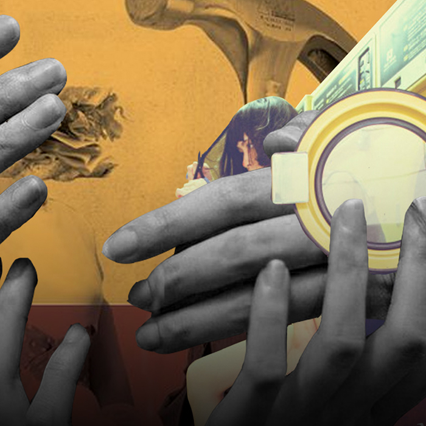

instructions on label
Labels are so interesting, and its interesting to see how much people find security in them, sometimes to the point of a flaw. There’s always this policing of labels that I see online a lot, and whether this group can say this, or do this, or what you need to consider yourself this label, so and so. It’s valid to an extent that obviously, you just can’t have anyone labelling themselves as anything without carrying the experiences to carry that label. However, the important part of labelling is carrying the label.
Sometimes people have labels they don’t want, and sometimes people take labels that they probably shouldn’t have. Carrying labels mean carrying experiences that the label holds. Of course, there are instances of where people make carrying labels too exclusive. For example, people who call trans people who don’t experience dysphoria as ‘not trans’ or just ‘trans-trenders.’ It’s so interesting and conflicting to witness, and such a nuanced topic to delve into, as in any direction is the exclusion of people or inclusion of people who abuse labels.
Another interesting phenomenon is the way white queers use queerness to escape responsibility for their whiteness. It’s particularly prominent online, but it’s no secret that it happens just as much in real life. There should be an emphasis for white queers, especially those that pander to the cis-het white people in power; those same people will be willing to oppress you when they’re no one left to oppress. An even bigger emphasis that white queer people are still white, and it should be considered when talking about queerness in objectiveness.